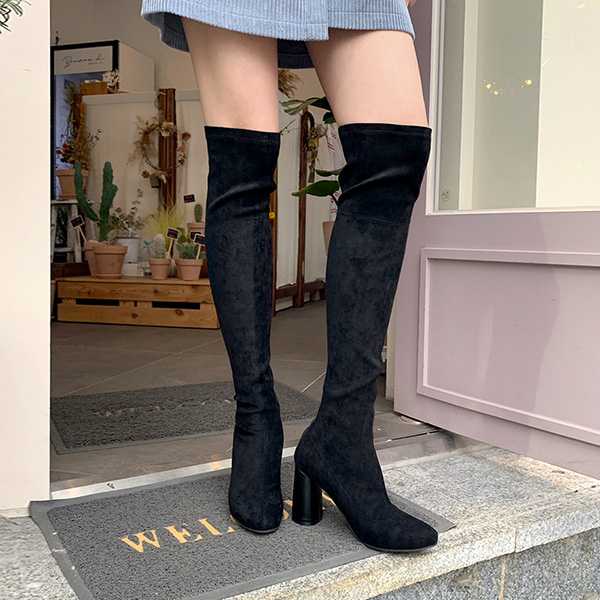
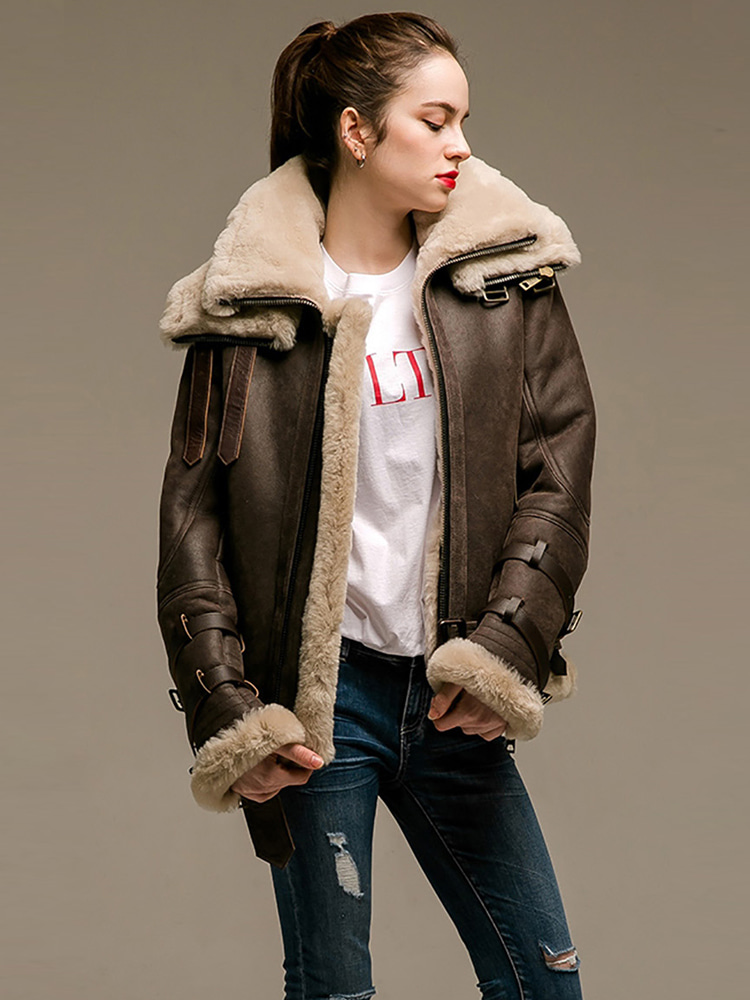
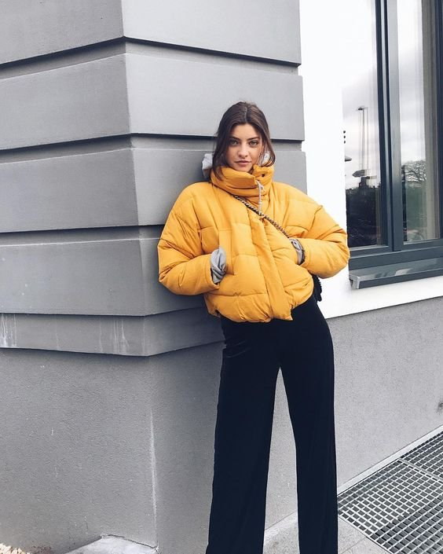

Winter

겨울의 첫 번째 코디 아이템은 활용할 수 있는 범위가 정말 많은 '롱부츠'이다.
무릎 위로 올라오는 롱부츠는 다리를 길고 날씬하게 만들어 준다.

두 번째, 공군들이 즐겨 입었던 아이템으로 럭셔리한 패션으로 자리잡은 '무스탕'이다.
다양한 컬러가 있는 무스탕은 고급스러운 무드를 풍기게 해 준다.

세 번째, 이제는 생존템으로 자리를 잡은 '패딩'이다.
보온과 포근함을 선사하는 패딩을 코디할 때는 귀여운 느낌으로 입는 것이 좋다.